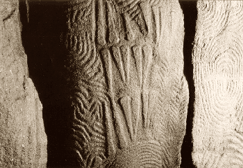

Les
roches ignées
Une roche ignée est ou a été produite sous l'action du feu terrestre.

Ces pierres sont dures, ce qui n'a pas empêché l'être humain de les employer
dans le cadre de réalisations artistiques monumentales dès le néolithique
(photo : cairn de Gavrinis, Morbihan, France). Leur résistance, leur permanence, leur
insensibilité aux agressions de tous ordres sont extrêmes sans être totales
sur une échelle de temps "géologique".
Elles proviennent des profondeurs de notre planète et sont dites pour cette
raison endogènes. On peut les opposer en cela aux matériaux issus de
processus de surface ou océaniques (métamorphiques ou sédimentaires).
Intrusives ou effusives, la durée du
refroidissement fait la différence
Commençons par celles que l'on dit intrusives ou
plutoniques. Elles se caractérisent
formellement par un grain grossier (ex. : granite).
Ces roches sont le résultat d'un refroidissement préalable sous la surface
(milliers d'années), ce qui explique cet aspect grenu car la lenteur du
processus permet la formation de phénocristaux,
alors qu'un refroidissement rapide donne un résultat tendant vers
l'amorphe.
Le granite et le gabbro notamment ont eu le temps de refroidir en profondeur avant d'être
mis au jour par l'érosion ou le démantèlement des massifs montagneux auxquels
ces roches sont associés au sein de poches appelées
plutons.
[aparté]
Lorsque deux plaques tectoniques s'affrontent, l'une d'elles peut passer sous
l'autre. C'est le processus de subduction à l'origine d'une bonne partie des
phénomènes volcaniques (tous sauf les rifts, où les plaques divergent). Dans la
configuration montagneuse, l'affrontement des deux plaques est suffisamment
équilibré pour que, restant à la même hauteur, elles se compriment, créant une
zone dense aux abords de la surface. Cette masse qui soude
littéralement les plaques ne permet pas aux chambres magmatiques situées
au-dessous de trouver issue en surface par des cheminées volcaniques alors même que
l'activité magmatique peut se poursuivre. Un pluton est donc en quelque sorte
une chambre bouchée par le haut où le magma ne peut rien faire d'autre que
refroidir lentement dans les profondeurs où il deviendra cristal.
A lire en complément pour une vision plus globale, un
remarquable document synthétique complet de l'université de Laval à Québec :
Une théorie planétaire : la tectonique des plaques
A l'inverse des roches plutoniques, les roches ignées effusives,
qui reviennent
en surface à la suite de phénomènes volcaniques, sont plus fines (basalte,
obsidienne, ...). Leur réchauffement puis leur refroidissement soudain dans
l'air ou dans l'eau ne permet pas la formation de cristaux.
Ainsi les compositions chimiques ne sont pas ce qui permet de distinguer
roches effusives et intrusives, même si l'on doit noter que sur les très gros
volumes rocheux (masses granitiques, masses basaltiques), il existerait une
tendance à l'acidité chez les intrusives
et à l'alcalinité parmi les effusives, ce qui pourrait s'expliquer par une
différenciation magmatique plus poussée dans
les plutons car beaucoup plus longue (sous toute réserve, information non
confirmée).
Quoi qu'il en soit, une chose certaine est que l'on trouve des roches
chimiquement identiques dans les deux catégories. Citons pour exemple un minéral
neutre, la diorite, roche plutonique grenue, et sa soeur jumelle effusive,
l'andésite qui est, elle, microlithique. Ou bien le
quartz et l'obsidienne. Encore une fois, seul le temps de refroidissement fait
la différence.
Retour
début de page